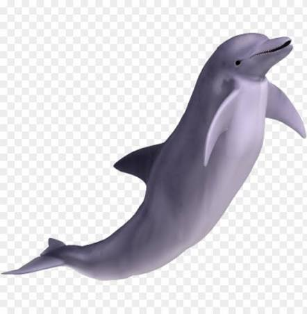

Dolphin Communication
Dolphins interact through a sophisticated mix of sound, sight, and touch to maintain complex social networks.
Signature Whistles
Unique vocalizations developed in their first year that serve as individual names for life-long identification.
- Calves invent these acoustics to broadcast identity and call specific pod members.
- Amazingly, dolphins can remember a former mate's whistle for over 20 years.
- These whistles are unique and vary across different dolphin groups.
Echolocation
High-frequency clicks used to map dark underwater surroundings and locate hidden, buried prey with extreme precision.
- Clicks project through the fatty forehead (melon) and bounce off objects.
- The returning echoes travel through the lower jaw directly to the inner ear, mapping a football field's distance.
- This acoustic sense can detect small differences in shape and texture underwater.
Burst-Pulse Sounds
Rapid sound bursts released so closely together they sound like squawks, used to signal aggression or maintain social order.
- Dominant dolphins rely on these sounds to scold younger pod members and defuse physical fights.
- Pods also use distinct burst patterns to sync up when herding bait balls of fish.
- These physical acoustics offer critical cues during chaotic situations.
Body Language
Leaping, tail-slapping, spyhopping, and jaw-clapping express immediate emotion or signal long-distance danger to the pod.
- Slapping a tail on the surface creates a loud boom that warns of predators.
- Flippers are also packed with nerve endings, meaning rubbing against each other cements vital social bonds.
- Physical leaps out of the water can serve as navigation marks for the pod.
Different Species
The dolphin family is incredibly diverse, spanning open oceanic environments to muddy freshwater rivers.
Common Bottlenose Dolphin
Famous for its coastal presence, high intelligence, and complex fission-fusion social structures.
- This globally recognized species has a brain-to-body ratio second only to humans.
- In places like Shark Bay, they display tool use by wearing sea sponges on their beaks to safely forage the rocky seafloor.
- They form tight social partnerships to navigate the marine world.
Orca (Killer Whale)
The largest dolphin species on earth, growing up to 10 metres and reigning as apex predators.
- Orcas belong strictly to the dolphin family.
- Their pods are matrilineal, passing down highly advanced, culture-specific hunting techniques—like beach rubbing or ice tipping—through generations.
- Different ecotypes have completely different vocabularies and hunting strategies.
Amazon River Dolphin
A freshwater species known for its pink coloration and unique physical adaptations for jungle rivers.
- Their pink color comes from blood capillaries near the skin surface.
- Unfused neck vertebrae let them turn their heads 90 degrees to swim through flooded rainforest trees, using sensory snout hairs to find fish.
- They are solitary hunters perfectly adjusted to muddy river paths.
Maui's Dolphin
A critically endangered species found only in New Zealand, recognized as the smallest marine dolphin.
- Fewer than 60 individuals remain in the wild.
- They sport a rounded, Mickey Mouse-ear dorsal fin.
- Because females reproduce slowly (one calf every 3 years), accidental fishing net drownings threaten total extinction.
Threats
Human activities, industrialization, and commercial shipping pose severe risks to global dolphin populations.
Pollution
Marine plastic, discarded ghost fishing gear, and chemical runoffs heavily contaminate their food supply.
- Toxins multiply up the food chain (bioaccumulation), weakening their immune systems.
- Meanwhile, underwater sound pollution from military sonar and shipping vessels can cause internal ear bleeding.
- Ingested microplastics ruin digestive tracks over time.
Habitat Loss
Coastal development, river damming, and shoreline destruction ruin critical feeding and nursery grounds.
- River dams slice populations into isolated gene pools, causing severe inbreeding.
- Coastal mangrove removal eliminates the nurseries of their prey, while fertilizer runoff creates dead zones empty of fish.
- Boat traffic paths push wild groups out of safe zones.
How to help
Individual actions, lifestyle adjustments, and global advocacy can contribute significantly to dolphin conservation.
Reduce Plastic Waste
Use reusable everyday items to keep microplastics and lethal debris out of ocean ecosystems.
- Opting for cloth bags stops plastic from breaking down into the marine food web.
- Cutting up plastic six-pack rings prevents loops from catching on blowholes, and local beach cleanups halt trash before it floats away.
- Reducing general single-use items cuts total pollution.
Support Marine Sanctuaries
Protect crucial ocean habitats through dedicated volunteering, donating, or supporting eco-friendly policies.
- Sanctuaries provide safe zones free from commercial trawling, shipping traffic, and deep-sea mining.
- Supporting strictly regulated eco-tourism operators ensures wild pods are never struck by reckless boats.
- Donations supply crucial funding for tracking migratory routes.
Game & Quiz
